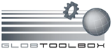

| GlobToolbox |  |
About the BEAM GlobToolbox, Version 3.0
The BEAM GlobToolbox project has been brought into life in order to support users of data acquired by ESA's Glob* projects.
The GlobToolbox is developed by Brockmann Consult under contract to ESA.
This program is free software; you can redistribute it and/or modify it under the terms of the GNU General Public License as published by the Free Software Foundation. This program is distributed in the hope it will be useful, but WITHOUT ANY WARRANTY; without even the implied warranty of MERCHANTABILITY or FITNESS FOR A PARTICULAR PURPOSE. See the GNU General Public License for more details.
You have received a copy of the GNU General Public License along with this program; if not, write to the Free Software Foundation, Inc., 59 Temple Place - Suite 330, Boston, MA 02111-1307, USA.
You can submit bug reports and feature request to the GlobToolbox Issue Tracker: http://www.brockmann-consult.de/beam-jira/browse/GBOX.
The most important source of information for the GlobToolbox project is the GlobToolbox Wiki: http://www.brockmann-consult.de/beam-wiki/display/GBOX.
Thank you for using the BEAM and GlobToolbox Software!
Copyright © 2012 by Brockmann Consult (beam-issues@brockmann-consult.de). All rights reserved.